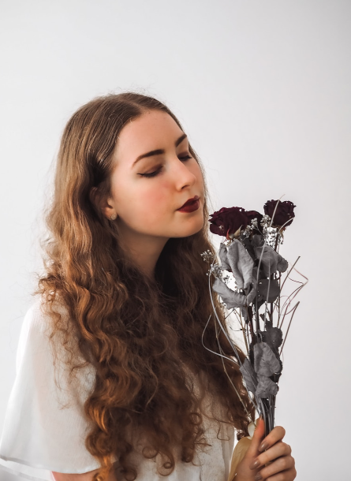

Samsun Nahar Lima
Graphics Designer
Expertise: Adobe Illustrator,Facebook
Hobby: Drawing,Traveling,Photography
I am a freelance graphic designer and photographer based in Los Angeles, CA. I have a BFA in
Graphic Design from the Maryland Institute College of Art and an MFA in Graphic Design from the
California Institute of the Arts. I have worked as a graphic designer and photographer for over 10
years, and have been teaching design and photography classes at the college level for the past 5
years. I am passionate about both design and photography, and love to combine the two
disciplines in my work. I believe that good design should be both beautiful and
functional, and that good photography should tell a story and capture a moment in time.